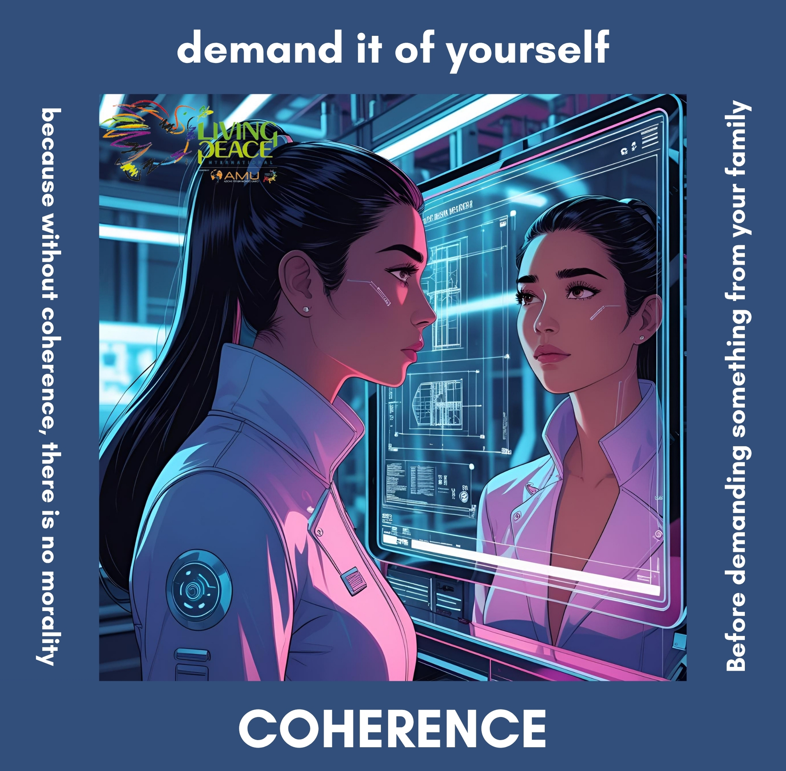

TU GESTO DE PAZ
Coherencia
Vive esta cara como una acción concreta de paz.
INGENIERÍA · PARA LA PAZ
Lanza el dado y descubre una invitación para sembrar gestos concretos de paz en este espacio de la vida cotidiana.

Vive esta cara como una acción concreta de paz.
LAS SEIS CARAS
Pulsa una tarjeta para descubrir su mensaje.
“La paz no es un único camino. Es una forma de vivir cada uno de ellos.”
Living Peace International